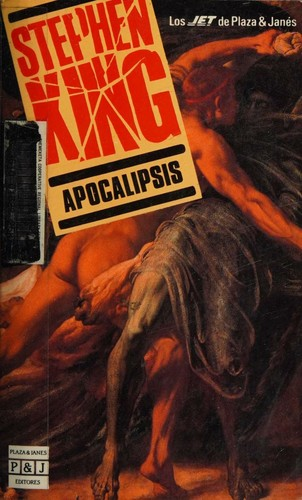

Apocalipsis
Precio: $19.99

Precio: $19.99
«Un virus gripal modificado, apodado el Capitán Trotamundos, se escapa de un laboratorio militar y aniquila a casi toda la humanidad. Los pocos supervivientes, inmunes a la plaga, comienzan a experimentar sueños compartidos de una naturaleza profética. Algunos son convocados por Madre Abigail, una anciana que encarna la luz y la esperanza en un Nebraska rural. Otros se sienten atraídos por la oscuridad de Randall Flagg, un ser demoníaco que busca instaurar un régimen de tiranía en Las Vegas. El destino del mundo se decide en un enfrentamiento épico entre estas dos facciones. La novela explora la fragilidad de la civilización y la eterna lucha entre el bien y el mal. Tras el colapso total, los protagonistas deben reconstruir la sociedad mientras enfrentan sus propios miedos. Es una obra monumental sobre la supervivencia humana y la redención en un paisaje postapocalíptico desolador y violento.»